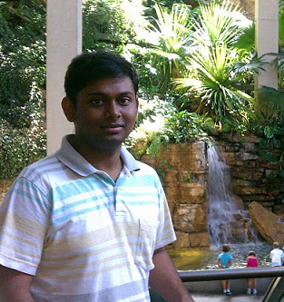

 Pradeep Garigipati(
LinkedIn Profile
)
Developer at
AccelerEyes
Interests: Computer Graphics and Parallel Computing.
GitHub username:
9prady9
ArrayFire for Web
Evolution of knowledge is no different from biological evolution, Copy and then mutate such that it is no more plagiarism but aboriginal.
On going projects:
Spending most time in think tank and online gaming.
Now that i did a stupid thing of deleting the video i created, it is good time to improve my bird flight Simulation and new video
Completed and Pause/Resume projects :
Duotone Surfaces
Image Synthesis using Ray Tracing
Parallelization of Cholesky Decomposition algorithm using MPI
Rendering and Shading class work
Pencil sketches
Geometric Modeling: Swept volume generation as implicit surfaces
Before AccelerEyes
MS in CS from
Texas A&M
, Class of 2013.
Bachelors in Technology at
National Institute of technology, Durgapur India.
Worked as Assistant Systems Engineer at
Tata Consultancy Services Ltd.
Publications :
Ergun Akleman, Qing Xing, Pradeep Garigipati, Gabriel Taubin, Jianer Chen, Shiyu Hu, Hamiltonian cycle art: Surface covering wire sculptures and duotone surfaces, Computers & Graphics, Volume 37, Issue 5, August 2013, Pages 316-332, ISSN 0097-8493.
P. Garigipati, E. Akleman. Duotone Surfaces. Computational Aesthetics in Graphics, Visualization, and Imaging 2012.
Yufeng Zhu, Pradeep Garigipati, Pieter Peers, Paul Debevec and Abhijeet Ghosh. Estimating Diffusion Parameters from Polarized Spherical Gradient Illumination. IEEE Computer Graphics and Applications.
 Before AccelerEyes
Before AccelerEyes
Before AccelerEyes
Before AccelerEyes